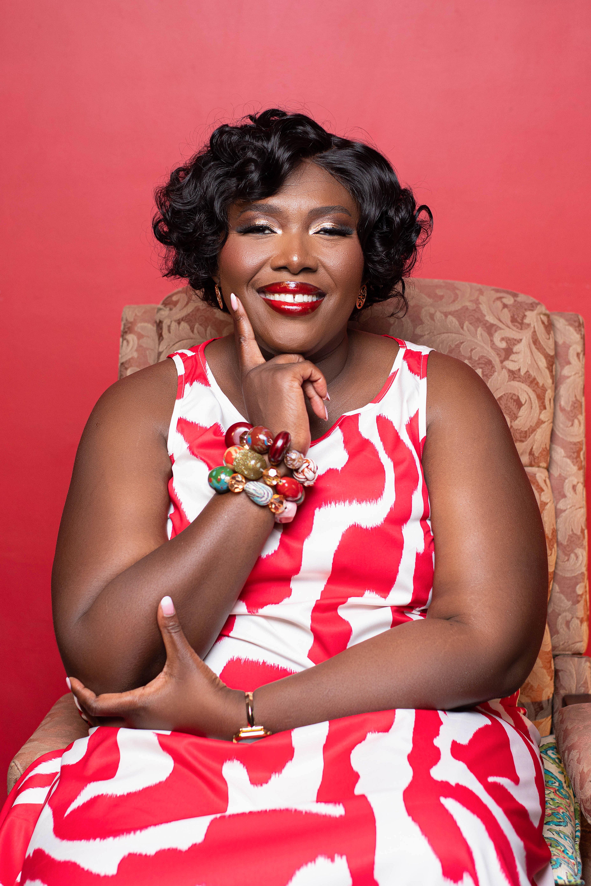

Business
Operator first
Strategy matters, but Francisca is most at home where strategy becomes process, ownership, rhythm and measurable delivery.
Francisca Boateng is an operations leader, entrepreneur, nonprofit founder, speaker and executive coach. Her work has moved across business operations, technology, cybersecurity education, literacy and community leadership.

Access to knowledge. Access to rooms people once thought were not for them. Access to practical technology education. Access to the confidence to use your own voice.
She serves in leadership across SLAMM and the SLAMM Foundation, leads literacy work through Read 2 Lead, and continues to build a public platform around leadership, work, faith and personal growth.
Strategy matters, but Francisca is most at home where strategy becomes process, ownership, rhythm and measurable delivery.
Her nonprofit work focuses on practical ways to widen access to education, technology and leadership.
Her speaking and writing reject the polished executive script in favour of lessons people can actually use.